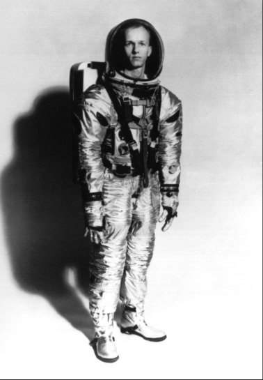

While various organizations struggled to get the spacecraft through the development phase, human factors experts concentrated on the progress of the spacesuit and the selection of astronauts. For some time, the suit had met turmoil, schedule delays, and technical problems. Early in 1962, Houston had forced a marriage between Hamilton Standard (for a portable life support system) and the International Latex Corporation (for the suit). Hamilton Standard managed the whole system, known as the extravehicular mobility unit. From the beginning, the arrangement proved unworkable.

The 1965 version of the Apollo spacesuit and backpack. Changes were made before man eventually stepped out of the spacecraft onto the lunar surface.
Just how unworkable was revealed in the spring of 1964, when prototype suits used in the command module mockup review turned out to be incompatible with the Apollo spacecraft cabin. NASA officials had to fall back on Gemini suits for Block I earth-orbital flights. This substitution gave Hamilton Standard and International Latex a chance to straighten out their problems, but borrowed time did not spell progress. Early in 1965, Hamilton Standard announced that its system manager for the backpack had begun in-house work on backup components for the suit (such as helmets and suit joints). The company had thus become a competitor of its own subcontractor. In February, Hamilton Standard reported that it intended to cancel the International Latex contract, citing poor performance, late deliveries, and cost overruns. Houston concurred.
Houston had also started some remedial actions. In January, David Clark Company, maker of the Gemini suit, had received a contract for backup development of an Apollo Block II suit. After six months, Houston would compare David Clark's suit with what Hamilton Standard, aided by B. F. Goodrich Company, was turning out. International Latex, informed that it was not being considered in the competition, nevertheless asked permission to submit an entry. When Crew Systems Division tested the three suits in June, International Latex had by far the best product.34
In mid-September, Gilruth and Low told Mueller and Phillips that Hamilton Standard would continue to manufacture the backpack. To eliminate the integration problems of the past, Houston would manage the total system and International Latex would develop the suit under a separate contract. This arrangement was agreeable to NASA Headquarters.35
The other major activity in human factors was the expansion of the astronaut corps. During 1962 and 1963, NASA had selected the second and third groups of pilots. These 23, the Gemini generation, with the original seven formed the basic pool for Apollo crews. In 1965, a new breed, called "scientist-astronauts," joined the ranks in training at Houston. NASA Headquarters hoped to mollify some of the scientific grumblers and to strengthen its ties with the scientific community by emphasizing Apollo's potential contribution to science - not only from the instruments that would send back information from the moon but from the men who would fly them there. Surprisingly, some of the drive to enlist these scientist-crewmen came from engineering-oriented Houston.
Robert B. Voas, human factors assistant to Gilruth and a key figure in setting up procedures for selecting Mercury pilots, had conferred with NASA Director of Space Sciences Homer Newell in Washington in 1963 about Houston's views on scientists for the space program. Voas later met with Eugene M. Shoemaker (of Newell's office), Joseph Shea, and George Low to discuss the most appropriate specialties. With an eye to lunar-surface, long-duration, and earth-orbital activities, the quartet agreed that the disciplines needed were geology, geophysics, medicine, and physiology.
At this September 1963 meeting, Voas emphasized that Houston wanted qualified pilots, but Shea saw no need for any previous flying experience. Why not take this opportunity to introduce methods for selecting and training nonpilots? In the end, the consensus was that candidates with flying backgrounds would be given preference but that applications from otherwise qualified men who lacked this training would be accepted. The National Academy of Sciences (NAS) should be asked to help recruit and select scientists for the program. Administrator Webb approved the recommendation.36
Harry H. Hess of NAS agreed in April 1964 to have his Space Science Board define appropriate scientific qualifications (age and physical criteria would be Houston's responsibility). Hess established an ad hoc committee, which submitted its report to Newell in July. In October, NASA announced that it was looking for astronauts with scientific training. For the first time, the selection criteria did not include a requirement for test pilot proficiency. Selectees who were not qualified pilots would be taught to fly after they joined the program. More than 1,000 applications had been received by December; 400 of these were forwarded to Hess's board in February 1965 for academic ranking.37
In June, NASA announced that 6 scientist-astronauts had been chosen from 16 nominated by the science board. In the group were one geologist (Harrison H. Schmitt), two physicians (Duane E. Graveline and Joseph P. Kerwin), and three physicists (Owen K. Garriott, Edward G. Gibson, and F. Curtis Michel). Two of the men, Kerwin and Michel, were qualified jet pilots, but the others were not. These four reported to Williams Air Force Base, Arizona, on 29 July for a year of flight training before joining their colleagues in Houston.38
Gilruth wanted another team of pilot-astronauts, and he sent Slayton to Washington to argue the case before Mueller on 15 January 1965. Mueller was cool to the idea, but he later told Gilruth that he might bring another group on board in the fall. On 10 September, NASA announced it would recruit a fifth set of astronauts to ensure "an adequate number of flight crews for Project Apollo and future manned missions."39
34. Richard S. Johnston to Shea, "Block II Apollo suit program," 7 and 25 Jan. 1965; Johnston to Gen. Research Procurement Br., Attn.: Ace C. Wilder, Jr., "Apollo EMU procurement package," 2 March 1965, with encs., esp. enc. B, "EMU Program Plan and EMU Statement of Work Bidding Instructions"; Gilruth to Chief, Procurement and Contracts Div., "Justification for noncompetitive procurement," 2 March 1965; Shea to NASA Hq., Attn.: Mueller, "Extravehicular Mobility Unit subcontractor change," 18 March 1965; Faget to Mgr., ASPO, "Crew Systems Division recommendation on establishment of suit wear criterion," 18 March 1965; Slayton to Chief, Crew Systems Div., "Apollo Suit Critique, CM CDR April 26–29, 1965," 11 May 1965; Melvyn Savage to Dir., Apollo Prog., "Extravehicular Mobility Unit (EMU) Development," 10 Sept. 1965; Gilruth to NASA Hq., Attn.: Mueller, "Procurement plan for the Apollo Extravehicular Mobility Unit and EMU ground support equipment development and fabrication," 20 Sept. 1965.
35. Savage to Dir. Apollo Program, 10 Sept. 1965; Gilruth to NASA Hq., 20 Sept. 1965; NASA, "NASA to Negotiate for Apollo Suit, Support System," news release 65-346, 5 Nov. 1965.
36. Robert B. Voas to Gilruth, 6 May 1963, with enc., Voas, "A Proposal for the Selection of Potential Scientist Crew Members," 25 April 1963; Voas for Dir., MSC, "Meeting with Drs. Eugene Shoemaker, Joseph Shea, and Mr. George Low regarding scientist-astronaut selection on September 4, 1963," 13 Sept. 1963, With enc.
37. Homer E. Newell to Harry H. Hess, 16 April 1964; Newell to Hess and Frederick Seitz, 19 Aug. 1964; Newell to Gilruth, 19 Aug. 1964, with enc., "Suggested Public Announcement of the Scientist-Astronaut Program"; NASA, "NASA to Select Scientist-Astronauts for Future Missions," news release 64-248, 19 Oct. 1964, and "NASA Reports Some 900 Persons Interested in Scientist-Astronaut Program," news release 64-315, 16 Dec. 1964; Gilruth to NASA Hq., Attn.: Mueller, "Astronaut selection," 6 Jan. 1965, with encs., "Schedule of Astronaut Selection" and "Pilot Selection Criteria"; idem, "Selection of scientists astronaut candidates," 4 Feb. 1965; MSC, "Astronaut Selection and Training," NASA Facts [1971].
38. NASA, "NASA Selects Six Scientists-Astronauts for Apollo Program," news release 65-212, 28 June 1965; MSC, "Scientist Astronaut Press Conference," 29 June 1965.
39. Gilruth letter, 6 Jan. 1965; Mueller to Gilruth, 25 Jan. 1965; MSC, "NASA to Select Additional Pilot-Astronauts," news release 65-79, 10 Sept. 1965.